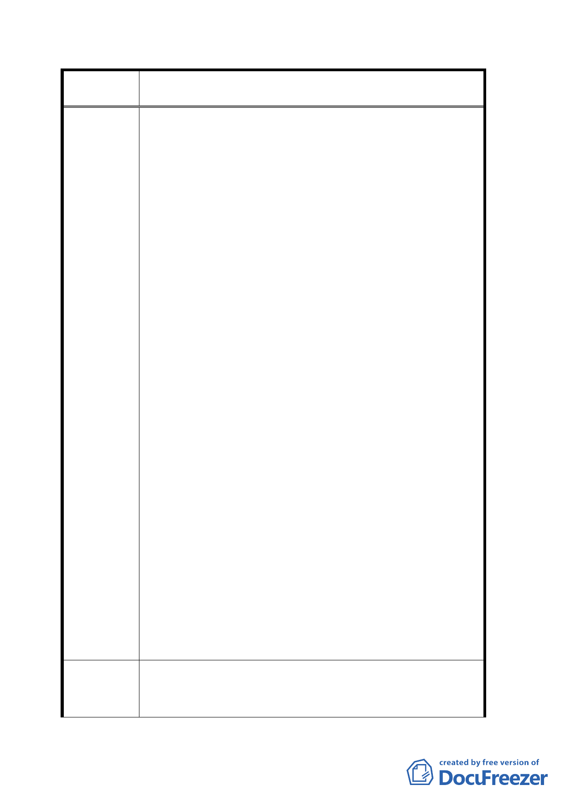

案 名 修訂台北市士林官邸特定商業區細部計畫案
地形圖面，與八十九年二月二十五日府都二字第
8901534100 號公告實施之地形優劣內容，落差極大。
代號 C2 之土地，是五、六十年原始土地所有權人等
抽籤後共同所有。在新修訂後之地形，其臨福林路之
土地線、面，明顯變窄、變小，地形明顯變狹長。因
有指定退縮，致 C2 臨福林路北側右方之畸零土地，
根本無法建築，況且福林路之車輛往來頻繁，且基地
北側又有八公尺雙向車道，若有建築物必擋住車輛往
來視線，將來該地區必定車禍頻傳。故主張該北側右
方之畸零土地，應修訂為公有綠地或廣場。而代號 C2
及 C1 土地臨福林路之中心線，應向中山北路方向移
動八公尺，讓地形與修訂前相符，並使 C2 土地能達
70%之建蔽率規定。對照之下，代號 C1、B1、B2、C3
等土地，是財團抽籤後所有或台北市政府所有，在新
修訂後之地形，臨中山北路及福林路之土地線、面，
明顯變長、變大，地形明顯變方整。抽籤前後地形內
容優劣，版本落差極大。且景觀遊覽車停車場，又冒
然停建。疑市政府預設立場，豬先殺死再講價，陳情
人合理懷疑，本案自始至今，全部之遊戲規則，疑為
特定人仕、財團而設。明顯承辦人心態可議，故，提
出嚴重抗議。釋憲案 400 號：個人若因公共利益有特
別犧牲，政府應給予適當補償。市政府對土地所有權
人非但未有所補償，更變本加利，予取予求，一隻牛
剝好幾層皮。請委員諸公要求市府官員對土地所有權
人所提之『建議辦法』，能有所善意回應及正面答覆。
並要求市府官員報請行政院協商財政部，要求對本案
『受害陳情人』衍生之遺產稅，予以免稅。並協助『受
害陳情人』解決遺產稅問題。且承辦人明顯違反公務
員服務法，請求予以調查。
對市政府於民國 94 年 1 月 14 日府都第 09405784000 號公
建 議 辦 法 開展覽，修訂「臺北市士林官邸」特定商業細部計畫案內
容，提出嚴重抗議。因之前，市政府於民國八十九年二月
二四